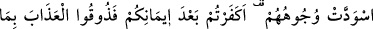

HAYRA ÇAĞIRAN TOPLULUK
104. Sizden, hayra çağıran, iyiliği emredip kötülüğü meneden bir topluluk
bulunsun. İşte onlar kurtuluşa erenlerdir.
105. Kendilerine apaçık deliller geldikten sonra parçalanıp ayrılığa düşenler gibi
olmayın. İşte bunlar için büyük bir azap vardır.
106. Nice yüzlerin ağardığı, nice yüzlerin de karardığı günü (düşünün.) İmdi,
yüzleri kararanlara: İnanmanızdan sonra kâfir mi oldunuz? Öyle ise inkâr etmiş
olmanız yüzünden tadın azabı! (denilir).
107. Yüzleri ağaranlara gelince, onlar Allah’ın rahmeti içindedirler; orada ebedî
kalacaklardır.
108. İşte bunlar, Allah’ın, sana hak olarak okuduğumuz âyetleridir. Allah hiç bir
kimseye haksızlık etmek istemez.
109. Göklerde ve yerde ne varsa Allah’ındır. İşler, dönüp dolaşıp Allah’a varır.
“İçinizden hayra” yani dînî ve dünyevî olarak iyiliğinize olan şeye “çağıran,
iyiliği” şerîatın ve aklın güzel bulduğu şeyleri -ki bunlar Allah’ın emir ve yasaklarına
uygun davranışlardır- “emredip kötülükten”; yani şerîatın ve aklın çirkin bulduğu
şeylerden -ki bunlar da ilâhî emir ve yasaklara ters düşen davranışlardır- “meneden bir
topluluk olsun”, bir topluluk bulunsun.
İşte bu kâmil sıfatlarla muttasıf olanlar kurtuluşa erenlerdir. Tam kurtuluşa erenler
yalnızca bunlardır.
Dâvet mükellefiyetinin ümmetin bazısına isnâd edilmesine rağmen, hitabın tüm
ümmete yöneltilmesi bu dâvetin farz-ı kifâye olduğunu, fakat herkese vacib olduğunu